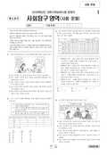

문제지


시험지를 먼저 풀어 보세요. 등급컷·표준점수·난이도는 흐리게 가려 뒀어요.
| 등급 | 원점수 | 표준점수 |
|---|---|---|
| 1 | 42 | 66 |
| 2 | 39 | 63 |
| 3 | 34 | 58 |
| 4 | 28 | 53 |
| 5 | 22 | 47 |
| 6 | 17 | 42 |
| 7 | 12 | 37 |
| 8 | 8 | 33 |
등급별 컷 · 공개 원점수 추정 · 평가원 표준점수 분포로 검증 · 만점 50점
정답 변경 없음
이의신청 2문항 · 평가원 상세 답변 2문항
평가원 답변
본 문항은 학력 수준별 정보화의 영향을 묻는 문제입니다. ㄱ. ‘고졸 이하’의 학력 수준에 해당하는 응답자 중에서 ‘사생활 침해가 늘어났다’에 ‘그렇지 않다’고 응답한 비율을 구하는 문제입니다. 그런데 자료에는 비율이 제시되어 있을 뿐 실제 응답자 수가 제시되어 있지 않으므로 두 집단을 합친 ‘고졸 이하’의 학력 수준에서의 응답 비율을 계산하는 것은 불가능 합니다. 다만, ‘고졸 이하’ 학력 수준에서의 응답자 비율이 8.8%를 넘지 않는다는 사실은 추론할 수 있습니다. 따라서 틀린 진술입니다. ㄴ.2000년의 경우, 고졸의 학력 수준에 해당하는 응답자 중에서 ‘생활이 편리해졌다’에 ‘이전과 비슷하다’에 11.1%가, ‘그렇지 않다’에 2.7%가 응답했으므로 ‘이전과 비슷하다’거나 ‘그렇지 않다’고 응답한 비율은 13.8%입니다. 따라서 옳은 진술입니다. ㄷ. 제시된 자료는 A국의 인터넷 이용자를 대상으로 조사한 결과입니다. 국민에는 인터넷 이용자와 인터넷 비이용자가 모두 포함되어 있습니다. 인터넷 이용자만을 조사한 표의 수치를 통해 국민 전체의 특성을 추론할 수 없습니다. 따라서 틀린 진술입니다. ㄹ. 동일 집단을 대상으로 두 질문에 대한 응답 비율을 비교한 것이므로, 2007년에 ‘사생활 침해가 늘어났다’에 ‘그렇다’고 응답한 사람의 수가 ‘생활이 편리해졌다’에 ‘그렇다’고 응답한 사람의 수 보다 적습니다. 따라서 옳은 진술입니다. 따라서 정답은 옳은 선택지 ㄴ,ㄹ만 포함된 ②번이며, 이 문항은 오류가 없습니다. 사회탐구 영역 : 유형(과목) : 사회·문화
평가원 답변
본 문항은 주어진 자료(1960년의 계층 구조, 1960년-2000년의 계층 구조의 변화)를 토대로 두 시점 사이에 이루어진 사회 계층 이동에 따른 구조 변화를 파악하는 문제입니다. 답지 ⑤는 1960년과 2000년에 계층 지위를 획득할 때 중시되는 요인을 비교하고 있는데, 제시된 자료에는 이에 대한 정보가 나타나 있지 않습니다. 왼쪽 자료인 ‘1960년의 A지역 계층 구조’는 계층별 인구만 제시했을 뿐 계층 간 이동의 유무는 제시되어 있지 않으므로, 계층 간 이동이 없다거나 신분이 중시되는 근대화 이전의 사회라고 볼 근거가 없습니다. 그래서 귀속 지위가 중시되는 사회 구조에서 성취 지위가 중시되는 사회 구조로 변화했다고 판단할 근거 또한 없습니다. 따라서 ⑤번은 오답이며, 이 문항은 오류가 없습니다.
발행 기관: 한국교육과정평가원(KICE). 파일 위치: 이 사이트가 보관한 사본. 저작권은 발행 기관에 있습니다. 원본과 다르거나 게시 중단이 필요하면 연락처로 알려 주세요. 등급컷 출처 구분은 데이터 원칙에서 설명합니다.
막대 색은 역대 대비 난이도 · 진한 막대가 이 시험 · 막대를 누르면 그 회차로 이동
| 회차 | 1등급컷 | 표점 최고 | 1등급 표점 | 난이도 |
|---|---|---|---|---|
| 수능2009학년도이 시험 | 42 | — | 66 | 어려움 |
| 수능2007학년도 | 42 | — | 66 | 쉬움 |